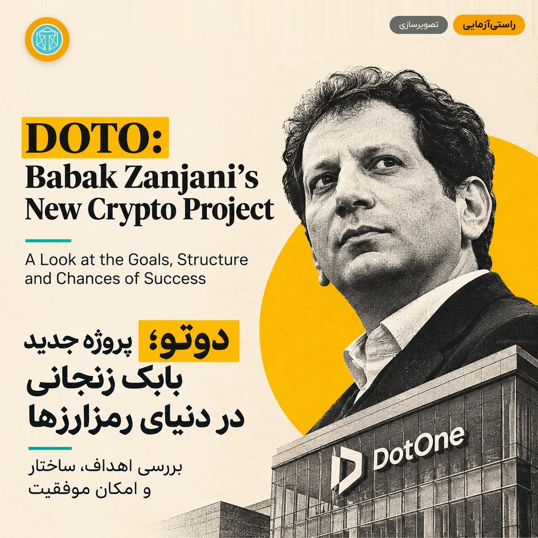

دوتو؛ رمزارز بابک زنجانی زیر ذرهبین
DOTO: Babak Zanjani’s crypto project under the lens
شدنی است؟ چقدر اعتبار دارد؟ کجا و چطور معامله میشود؟
Is it feasible? How credible is it? Where and how can it be traded?
بابک زنجانی با رمزارز DOTO (دوتو) و شبکهی اختصاصی DotOne Smart Chain وارد دنیای بلاکچین شده و طبق اعلام پروژه، معاملات رسمی دوتو از ۹ آذر ۱۴۰۵ (۳۰ نوامبر) آغاز میشود. سر و صدا زیاد است: کد دعوت در آگهیها خرید و فروش میشود و سایتهای جعلی هم پیدا شدهاند. ما سه سؤال ساده را بررسی کردیم: آیا شدنی است؟ چقدر اعتبار دارد؟ و کجا و چطور میشود آن را معامله کرد؟
در یک نگاه
- چیست: رمزارز بومی یک بلاکچین اختصاصی با سازوکار اثبات سهام (PoS) که با کیفپولهای سازگار با اتریوم کار میکند
- شبکه واقعاً روشن است: مرورگر بلاکچین آن فعال است و بلوکهایی با شمارهی بالای ۱۱ میلیون در آن دیده میشود. این یعنی شبکه کار میکند، نه اینکه استفادهی واقعی دارد.
- مجوز داخلی ندارد: وزارت اقتصاد میگوید داتوان مجوز صرافی رمزارز ندارد و ناظر مجلس پیشفروش را غیرقانونی خوانده
- راه بینالمللی بسته است: خود زنجانی، دو صرافی رمزارز مرتبط با او و گروه داتوان در فهرست تحریم آمریکا هستند
- کجا معامله میشود: هیچ صرافی معتبر بینالمللی یا دارای مجوز داخلی آن را فهرست نکرده و فروش فعلاً از مسیر فروش دعوتی و ابزارهای خود پروژه است
- جمعبندی دیتومان: ساختن بلاکچین کار سختی نیست؛ ساختن اعتماد و اقتصاد واقعی دور آن سخت است. امروز دوتو پروژهای پرریسک است.
1. دوتو چیست؟ عددهای اعلامشده
این ارقام اعلام خود پروژهاند و ما نتوانستیم آنها را مستقل تأیید کنیم.
| مشخصه | مقدار اعلامشده |
|---|---|
| عرضهی کل | ۱۰۰ میلیارد واحد |
| قیمت پایه | ۰٫۰۲ دلار |
| ارزش نظری کل عرضه | ۲ میلیارد دلار |
| نقدینگی اولیه | ۵ میلیون دلار |
| شبکه | DotOne Smart Chain |
| سازوکار اعتبارسنجی | اثبات سهام (PoS) |
| شناسهی زنجیره | ۵۰۵ |
| آغاز معاملات | ۹ آذر ۱۴۰۵ |
شناسهی زنجیره (۵۰۵) و بومی بودن دوتو در درخواستی آمده که ۲۴ نوامبر برای افزودن این شبکه به کیفپول متامسک ثبت شده و هنوز بررسی نشده (GitHub). یکی از سایتهایی که خود را سایت رسمی فروش معرفی میکند، قیمت را ۰٫۰۱۷ تتر نشان میدهد و پول را بهصورت تتر روی شبکهی BNB میگیرد. ما رسمی بودن آن سایت را نتوانستیم تأیید کنیم.
یک نکتهی مهم: «ارزش نظری ۲ میلیارد دلار» یعنی ۱۰۰ میلیارد واحد ضرب در ۰٫۰۲ دلار؛ یعنی ورود ۲ میلیارد دلار سرمایه به پروژه نیست. ارزش واقعی بازار پس از آغاز معاملات، از روی عرضهی در گردش، تقاضا و نقدشوندگی معلوم میشود.
2. قرار است چه کاری بکند؟
طبق وایتپیپر داتوان، پروژه میخواهد مجموعهای از خدمات بلاکچینی بسازد:
- صرافی متمرکز و غیرمتمرکز
- پرداخت کارمزد و اعتبارسنجی شبکه
- ارتباط با بلاکچینهای دیگر (پل)
- دیجیتالیکردن داراییهای واقعی مثل طلا و املاک
- برنامههای مالی و تجاری
بخشی از این ابزارها، یعنی مرورگر بلاکچین، پل، سواپ و سایت استیکینگ، اکنون روی دامنههای پروژه دیده میشوند و بخشی هنوز در نقشهی راه است.
3. آیا شدنی است؟ ظرفیت واقعی
ساختن بلاکچین آسانترین بخش است. امروز با کدهای متنباز، ساختن یک زنجیرهی سازگار با اتریوم کار چند ماه است. سختترین بخش ساختن اقتصادی است که مردم واقعاً از آن استفاده کنند.
نقدینگی را جدی بگیرید. ۵ میلیون دلار نقدینگی در برابر ۲ میلیارد دلار ارزش نظری یعنی فقط ۰٫۲۵٪. یک مثال ساده: اگر کل این نقدینگی در یک استخر معمولی صرافی غیرمتمرکز باشد (نصف دوتو، نصف دلار)، فروش حدود ۲۵۰ هزار دلار دوتو قیمت را حدود ۱۷٪ پایین میآورد و فروش ۱ میلیون دلار حدود ۴۹٪. ساختار واقعی استخرها هنوز اعلام نشده؛ این عدد فقط برای فهم ابعاد است.
کاربرد واقعی از کجا میتواند بیاید؟ گروه داتوان در ریل، هواپیمایی، طلا و تهاتر فعالیت دارد؛ از جمله قراردادی حدود ۸۰۰ میلیون دلاری با راهآهن ایران در آوریل ۲۰۲۵ (OCCRP). اگر پرداخت این خدمات با دوتو ممکن شود، تقاضای داخلی واقعی شکل میگیرد. اما همین شرکتها تحریماند، پس این کاربرد احتمالاً به داخل ایران محدود میماند.
امنیت شبکه به اعتبارسنجها بستگی دارد. در اثبات سهام، امنیت و استقلال شبکه به تعداد اعتبارسنجها و اینکه چه کسانی هستند وابسته است. ما فهرست مستقل و قابلاتکایی از اعتبارسنجها پیدا نکردیم. اگر چند اعتبارسنج محدود زیر نظر یک گروه باشند، شبکه در عمل متمرکز است.
4. اعتبار: سابقه، تحریمها و مجوز
سابقهی بنیانگذار. بابک زنجانی در اسفند ۱۳۹۴ (مارس ۲۰۱۶) به اتهام اختلاس و افساد فیالارض به اعدام محکوم شد و دیوان عالی کشور حکم را در دسامبر همان سال تأیید کرد. در اردیبهشت ۱۴۰۳ (آوریل ۲۰۲۴)، پس از بازگرداندن حدود ۲٫۱ میلیارد دلار دارایی، حکم به ۲۰ سال حبس تقلیل یافت و او پس از آن دوباره در فعالیتهای اقتصادی ظاهر شد (ویکیپدیا).
تحریمها.
| تاریخ | چه کسی | چه کسی یا چه چیزی تحریم شد |
|---|---|---|
| دسامبر ۲۰۱۲ | اتحادیهی اروپا | بابک زنجانی |
| آوریل ۲۰۱۳ | وزارت خزانهداری آمریکا | بابک زنجانی |
| ۳۰ ژانویهی ۲۰۲۶ | وزارت خزانهداری آمریکا | صرافیهای رمزارز Zedcex و Zedxion؛ نخستین صرافیهای رمزارزی که بهدلیل ارتباط با سپاه تحریم شدند |
| ۲۴ ژوئیهی ۲۰۲۶ | وزارت خزانهداری آمریکا | گروه ارزشآفرینی داتوان و پنج زیرمجموعه (طلا، ریل، تهاتر، هواپیمایی، داتوان تریپ)، بههمراه چهار نفر و سه شرکت در استانبول و دبی |
طبق تحلیل TRM Labs، حدود ۱ میلیارد دلار جریان استیبلکوین مرتبط با سپاه در ۲۰۲۳ تا ۲۰۲۵ از زیرساخت Zedcex گذشته است (TRM Labs). وزارت خزانهداری آمریکا «توکن طلا» (Tala Token) را هم توکنی «ظاهراً پشتوانهدار به طلا» توصیف کرده که از همین زیرساخت گذشته است (Treasury). زنجانی در واکنش در ایکس نوشته شرکتها و افراد تحریمشدهی خارج از ایران با او رابطهی تجاری ندارند (OCCRP).
این برای خریدار چه معنایی دارد؟ طبق قواعد تحریم آمریکا، اشخاص آمریکایی از هر معامله با اموال اشخاص تحریمشده منعاند و شرکتهایی که ۵۰٪ یا بیشتر متعلق به آنها باشند هم تحریمشده حساب میشوند. ما نتوانستیم تأیید کنیم ناشر دوتو کدام شرکت است، ولی برند و مدیریت با گروه تحریمشده یکی است. در عمل یعنی صرافیهای بزرگ بینالمللی سراغ فهرست کردن آن نمیروند و نشانیهای تتر مرتبط با شبکههای تحریمشده ممکن است از سوی صادرکنندهی تتر مسدود شوند.
مجوز داخلی. در ۱ آذر ۱۴۰۵، هادی محمدپور، ناظر مجلس در شورای عالی بورس، پیشفروش این رمزارز را «اقدامی آسیبزا» خواند و گفت هر کسی بدون مجوز بانک مرکزی رمزارز بفروشد یا پیشفروش کند، غیرقانونی عمل کرده. هادی محضرنیا، رئیس مرکز ملی پایش و بهبود محیط کسبوکار وزارت اقتصاد، هم گفت داتوان مجوز فعالیت بهعنوان صرافی رمزارز ندارد (میهن بلاکچین).
5. کجا میشود خرید؟ قابل معامله است؟
| مسیر | وضعیت | ریسک |
|---|---|---|
| صرافیهای بزرگ بینالمللی | هیچ فهرستی پیدا نکردیم | بهدلیل تحریمها بعید است |
| صرافیهای داخلی دارای مجوز | طبق مسئولان، مجوز هنوز صادر نشده | بلاتکلیفی قانونی |
| فروش دعوتی و سایتهای فروش پروژه | فعال است | رسمی بودن سایتها را نتوانستیم تأیید کنیم؛ سایتهای جعلی گزارش شده |
| سواپ و پل خود شبکه | روی دامنههای پروژه دیده میشود | نقدینگی کم و وابستگی کامل به خود پروژه |
| کیفپول | سازگار با اتریوم؛ متامسک هنوز رسماً اضافه نکرده | اضافه کردن دستی شبکه یعنی دقت بیشتر |
هشدار کلاهبرداری. رسانههای رمزارزی ایران از سایتها و کانالهای جعلی فروش دوتو خبر دادهاند و کد دعوت آن در آگهیهای اینترنتی خرید و فروش میشود. چند قاعده:
- هرگز برای «کد دعوت» به حساب شخصی پول واریز نکنید
- دامنه را حرفبهحرف چک کنید؛ نامهای شبیه به هم زیادند
- عبارت بازیابی (سید) کیفپولتان را به هیچ سایت، ربات یا پشتیبانی ندهید
- پیش از خرید بپرسید: اگر بخواهم بفروشم، کجا و با چه نقدینگی؟ خریدن بدون راه خروج، ریسک اصلی است
6. شباهت جالب دوتو و دیتومان
نام DOTO از نظر آوایی به «دو تومن» شبیه است؛ هرچند منشأ این نامگذاری تأیید نشده. دیتومان (Ditoman) هم نامش را از ترکیب Digital و Toman گرفته و توکن TMN آن در فوریهی ۲۰۲۲ روی شبکهی BNB Smart Chain ساخته شده (قرارداد TMN در BscScan).
با وجود شباهت نامها، فلسفهی دو پروژه متفاوت است. دوتو میخواهد زیرساخت بلاکچینی برای خدمات مالی و تجاری بسازد. دیتومان رسانه و پلتفرمی آموزشی است که از TMN برای پیوند دادن یادگیری و مشارکت با دسترسی، قدردانی و پاداش استفاده میکند.
7. از ۹ آذر به بعد چه چیزهایی را باید دید؟
- آیا عرضهی در گردش و جدول توزیع (سهم تیم، قفلها، آزادسازی) شفاف منتشر میشود؟
- آیا فهرست اعتبارسنجها و صاحبانشان معلوم است؟
- حجم معاملات واقعی چقدر است و چقدرش در استخرهای خود پروژه است؟
- آیا صرافی دارای مجوز آن را فهرست میکند و نهادهای ناظر چه موضعی میگیرند؟
- آیا قراردادها حسابرسی امنیتی مستقل دارند؟
- آیا برداشت و فروش بدون مانع انجام میشود؟
تحلیل دیتومان
ورود پروژههای ایرانی به زیرساخت بلاکچین از نظر فناوری قابلتوجه است و روشن بودن شبکه نشان میدهد کار فنی انجام شده. ولی معیار موفقیت یک رمزارز قیمت یا تعداد واحدهایش نیست؛ این است که چه مسئلهای را حل میکند، چه کسانی از آن استفاده میکنند و چه ارزش واقعی میسازد.
امروز دوتو سه گره جدی دارد: تحریم بینالمللی، نبود مجوز داخلی و نقدینگی بسیار کم نسبت به ارزش اعلامشده. هر کدام میتواند خرید را آسان و فروش را سخت کند. دوتو را پس از آغاز معاملات با همین معیارها دنبال میکنیم.
این گزارش آموزشی است و توصیهی خرید، فروش یا سرمایهگذاری نیست.
بیشتر بخوانید
منابع
- DotOne whitepaper (project document; we could not open it directly)
- Dotscan: DotOne Smart Chain block explorer
- GitHub: MetaMask request to add DotOne Smart Chain (24 Nov 2026)
- Mihan Blockchain: Parliament says Zanjani crypto pre-sale is illegal; DotOne has no exchange licence (22 Nov 2026)
- US Treasury: Treasury Further Dismantles Iranian Financier Zanjani's Network (24 Jul 2026)
- TRM Labs: OFAC sanctions Zedcex and Zedxion (30 Jan 2026)
- OCCRP: US sanctions family of Iranian tycoon in crackdown on alleged IRGC crypto network
- bne IntelliNews: Istanbul, Dubai fintechs feel heat as US sanctions turn on Zanjani
- Wikipedia: Babak Zanjani
- Ramzarz News: fake DOTO sale sites and channels (headline)
- Khabar Jadid: DOTO trading in under 7 days; exchange licences not yet issued (headline)
- BscScan: TMN token contract
آخرین بازبینی: ۵ آذر ۱۴۰۵. تحریمها از بیانیهی وزارت خزانهداری آمریکا و TRM Labs و موضع مجلس و وزارت اقتصاد از گزارش میهن بلاکچین بررسی شد. عددهای عرضه، قیمت و نقدینگی اعلام خود پروژهاند؛ وایتپیپر و چند رسانهی داخلی (گزارشهای کلاهبرداری و مجوز صرافیها) را نتوانستیم مستقیم باز کنیم و فقط عنوانشان را دیدیم. این گزارش توصیهی خرید، فروش یا سرمایهگذاری نیست.